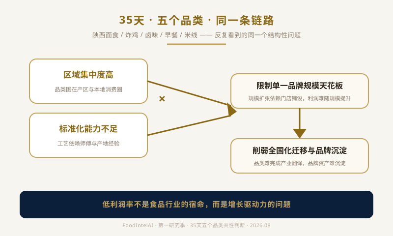
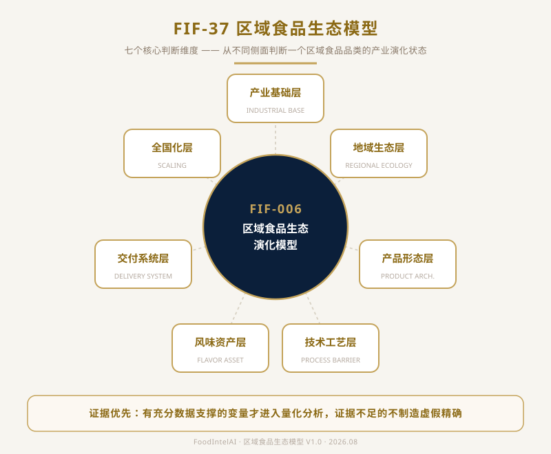

关于 FoodIntelAI 阶段性研究方式的一次说明
从炸鸡研究开始，我们沉淀的不只是一个品类，而是一套产业分析方法。
连续输出食品产业研究，从炸鸡、卤味、早餐、米线，到区域品类发展，再到品牌化、标准化、供应链、渠道和经营模型，我们尝试用一种不同于传统美食内容的方式，去观察和拆解食品产业。
有人认可，也收到一些不同声音：
这些问题，其实值得认真回答。因为它们涉及一个根本问题：我们是谁，我们在做什么。
连续输出一周米线产业研究，对真正的行业人有价值，但对更多读者来说，可能会有距离感：不知道我们为什么研究，不知道这些分析模型有什么用，不知道这些内容和自己有什么关系。
所以借着一个月的研究周期告一段落，我们想借这篇文章，把这几个问题说清楚。
我们认为，研究并不是专家、学者或者机构的专属。
这就是研究。
当然，专业知识、行业经验和长期积累，会影响研究深度。但研究这件事情本身，并不是只有某一种身份的人才能进行。
一个创业者可以研究市场。一个企业可以研究消费者。一个工厂可以研究供应链。一个普通消费者，也可以研究自己每天接触的产品为什么成功、为什么失败。
区别只在于：研究是否严谨，分析是否有依据，结论是否经得起验证。
具体来说，我们对自己的要求是三点：数据必须标明来源，不用没有出处的数字；多个来源出现矛盾时，如实呈现分歧或采用区间，而不是取一个好看的数字；结论如果和此前的判断有冲突，当作错误来对待，而不是模糊带过。
我们并没有把自己包装成某种权威机构，也没有试图替代专业研究机构。我们做的是：站在食品产业参与者的角度，通过长期行业经验和公开信息，对产业问题进行观察、拆解和总结。
这是另一个容易产生误解的地方。
很多人理解中国食品，更多停留在地方特色、传统美食、地域文化、历史故事。这些当然重要，但它们只是食品产业的一部分。
食品当然是一种文化产品，但同时也是一种产业——而这恰恰是被大多数人忽略的一面。从产业发展的角度观察，中国食品产业仍处于从区域化、经验化，向标准化、品牌化、工业化升级的阶段。
这不是在贬低中国食品，恰恰相反，这是一个巨大的发展空间。
中国拥有世界上非常丰富的饮食文化，这是优势。但文化丰富，并不等于产业成熟。一个地方美食能够流传几百年，说明它具备文化价值；但要走向全国甚至全球，还需要解决产品标准化、供应链稳定、生产效率、品质一致性、消费认知、商业模型这些问题。
"好吃"，解决的是消费体验。"能够规模化复制"，解决的是产业发展。这是两个不同的问题。很多优秀地方产品，会消失，会失败，不是因为不好吃，而是因为没有完成从地方经验到现代产业体系的转换，单靠情怀无法支撑一个特色食品持续发展存在。
标准化是不是会消灭地方美食？这也是很多讨论中的误区。标准化并不等于消灭特色。真正成熟的食品产业，往往是在"文化特色 × 工业效率"之间寻找平衡。世界食品发展历史也证明：大多数能够形成规模的食品产品，最终都会经历"经验化 → 标准化 → 规模化 → 品牌化"，这是生产效率提升带来的自然结果，不是某个人的意愿决定，也不是喜欢传统就可以阻止产业变化。
所以，FoodIntelAI 不做美食推荐，不做地方故事整理，不做简单配方分享。我们关注的不是一道菜，而是总结可窥的的一套规律：为什么一个品类能够发展？为什么一些产品无法突破区域？为什么有些品牌能够复制？为什么很多创业者进入后失败？背后的市场规律、供应链逻辑、消费变化、商业模型、产业趋势，才是我们希望研究的内容。
我们不回避使用 AI。
今天的信息环境已经发生巨大变化，每天数百甚至上千的信息及数据来源，如果完全依靠人工处理，效率非常低。AI帮助我们做信息整理、数据归纳、多来源交叉验证、内容结构优化、图片设计等繁杂节点。
但 AI 不是答案。真正困难的部分，从来不是"写出来"，而是：哪些信息可信？哪些数据需要排除？哪些结论符合产业规律？这些核心需要行业经验和人工判断去把关。
如何正确使用工具，提高效率，本身就是人类最擅长的事情之一。客观看待 AI 的能力边界，合理、有效地使用它，是社会发展趋势，也是工具被使用之后的必然结果。不用，是放弃效率；盲目迷信，则是放弃判断——这两种态度，我们都不取。
从炸鸡研究开始，我们没有只输出文章，同时也在沉淀一套可以复用的分析工具：
1. 品类产业分析框架——帮助理解一个食品品类的发展逻辑，而不是停留在单一案例。
2. 品类变量插件——不同品类，需要不同的产业变量。米线不是炸鸡，米线不是卤味。我们不强行用同一套维度套所有品类，而是为每个品类保留独立的变量插件。
3. 决策因子——最终服务于创业判断、产品开发、品牌规划和产业理解。比如一个准备进入米线赛道的创业者，可以借助这套模型判断：自己所在城市的米线消费认知处于哪个阶段，供应链能不能支撑标准化，选择直营还是加盟更符合自己的资源条件。这不是替创业者做决定，而是帮他把决定拆解成可以逐条核对的问题。
这套框架和插件不是凭空设计的，是从每一个具体品类的研究里一点点抠出来的。本周以米线为蓝本沉淀出的具体成果，放在文末统一说。
过去35天，我们连续做了五个系列的产业研究：陕西面食、炸鸡、卤味、早餐、米线，每个系列大致一周左右。
这不是为了追求数量。而是因为，当你把这些系列放在一起看，会发现一个比单一品类研究更有价值的东西。
第一个价值，是视角的积累。每个系列都单独沉淀了一套分析框架和一批决策因子，如果有人正在考虑进入这个行业，无论具体做的是哪个品类，看一眼这些框架，都能多一个判断角度。
第二个价值，是共性的浮现。做了35天以后我们发现，这些体系本质上是相通的。行业不同，产品形态不同，但真正卡住一个品类的问题，几乎是同一条链路：区域集中度高、标准化能力不足，这两个因素叠加，直接限制了单一品牌的规模天花板，也削弱了品类向全国化迁移、完成品牌资产沉淀的能力。

这也是我们坚持用全国化视角去看每一个品类的原因。中国的消费市场足够大，食品和成品工业化的品类足够丰富，供应链、物流和线上渠道的基础条件也在持续变好。但对照来看,能够做到体量足够大、利润率足够扎实的食品公司,在国内并不多见。这不是某一个品类的个别现象,而是我们连续拆解五个不同赛道后,反复看到的同一个结构性问题。
| 绝味食品 | 蜜雪冰城 | |
|---|---|---|
| 营业收入 | 62.57亿元（同比-13.84%） | 335.6亿元 |
| 归母净利润 | 2.27亿元（同比-34.04%） | 58.8亿元 |
| 净利率 | 约3.6% | 约17.5% |
| 数据来源 | 绝味食品2024年年度报告 | 蜜雪冰城2025年财报 |
这里有一个可以核对的例子。绝味食品2024年营业收入62.57亿元,同比下降13.84%;归母净利润2.27亿元,同比下降34.04%,净利率约3.6%（数据来源:绝味食品2024年年度报告）。做食品这一行,很多从业者的体感是"很累、很拼、也很有挑战性",但落到财务报表上,净利率往往并不高——这种"高投入、低回报"的落差，本质上是增长驱动力的问题：当一个品类的规模扩张主要依赖门店网络铺设，而不是供应链效率和标准化带来的边际成本下降，利润率就很难随着规模同步提升。卤味、休闲食品，连锁餐饮这类以加盟扩张为主要增长引擎的品类，是这个规律比较典型的体现。
但这不是一条无法打破的铁律。同样是连锁品牌，蜜雪冰城2025年营收335.6亿元、归母净利润58.8亿元,净利率约17.5%（数据来源:蜜雪冰城2025年财报),明显高于行业里大多数上市食品公司。这个对比恰恰说明,低利润率不是食品行业的宿命,而是和供应链效率、标准化程度、规模效应是否真正跑通高度相关——这也印证了我们前面提到的核心变量。
即便是像蜜雪冰城、霸王茶姬这样走向海外的品牌，或是鼎泰丰、杨国福这类在细分品类做到极致的企业，它们终局要解决的依然是标准化、供应链、消费认知与场景适配这四个核心要素——区别仅在于，有些品类靠工业化效率拼规模（如蜜雪），有些靠溢价与体验做密度（如鼎泰丰）。国内市场的极致内卷，本质上是大量品牌在"规模效率"这单一维度上的同质化较量：谁能先用标准化撬动规模，再用规模压低供应链成本，谁才能握住抗风险的利润护城河。
我们把这个发现当作一个客观事实来对待，而不是一个结论。它也是我们接下来继续做产业研究的出发点：与其一个品类一个品类地重新摸索，不如把这套共性问题当成起点，再去看每个品类各自的特殊变量。
我们不是一家大型咨询机构，目前只是一个小团队，没有巨大资源，也没有包装成权威。
我们做这件事情的原因很简单：希望帮助更多人在面对食品创业、产品选择、行业判断时，多一个视角，少一些盲目，少走一些弯路。
如果内容对你有价值，欢迎交流。如果观点不同，也欢迎提出事实和逻辑——真正有价值的行业讨论，从来不是谁声音最大，而是谁能够更接近事实。
本周，我们以米线产业研究为基础，沉淀出 FoodIntelAI Framework 体系中的一项新资产：
本次正式沉淀的资产，统一纳入 FoodIntelAI Framework 编号体系。这套模型的核心，并不是简单地对每个维度进行0-100分评分后加总，而是坚持"证据优先"的原则：
换句话说，我们关注的不只是"得到一个分数"，更关注这个判断背后是否拥有足够可靠的依据。
FIF-37目前包含七个核心判断维度：

在米线案例的首次验证中：
产业基础层、地域生态层，已经有门店规模、市场数据、行业研究等公开信息支撑，例如窄门餐眼、红餐产业研究院等数据来源，因此具备较高证据基础；
产品形态层、风味资产层，目前更多依赖行业观察、案例分析和消费者认知研究，仍需要更多一手调研数据补充；
技术工艺层涉及工业化损耗率、生产效率、供应链稳定性等指标，由于目前缺少足够公开数据，因此暂不强行纳入量化评价。
这次验证的意义，并不是给米线行业提供一个"标准答案"，而是完成一次模型自检：哪些变量已经具备分析基础，哪些变量仍需要持续积累数据。
此前炸鸡、卤味等研究系列中使用的六维模型、五个产业世界模型，同样属于针对具体品类设计的分析框架，并不与FIF-37直接通用。这并不是体系不统一，而是FoodIntelAI坚持的一项原则：
未来，随着更多品类研究展开，这些模型将持续迭代，并逐步沉淀进入 FoodIntelAI Framework 系统，成为食品产业研究、创业判断和商业决策中的基础分析组件。
📚 数据来源
绝味食品2024年年度报告（营业收入/归母净利润/净利率）